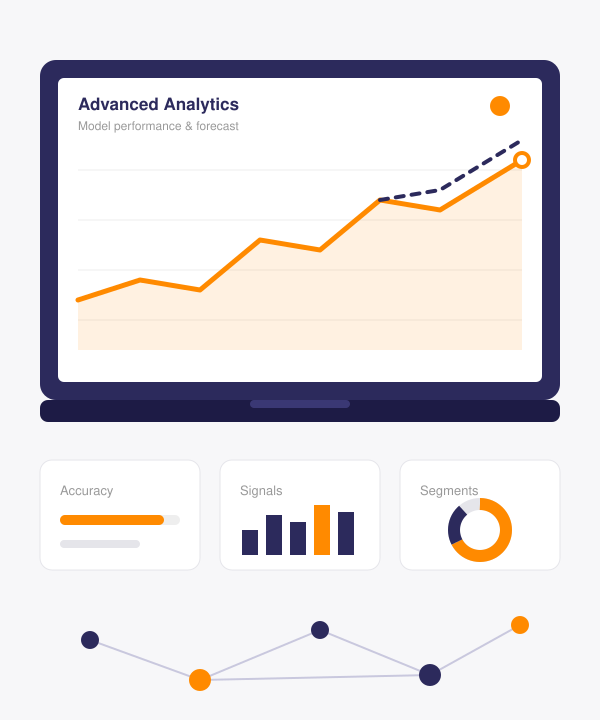
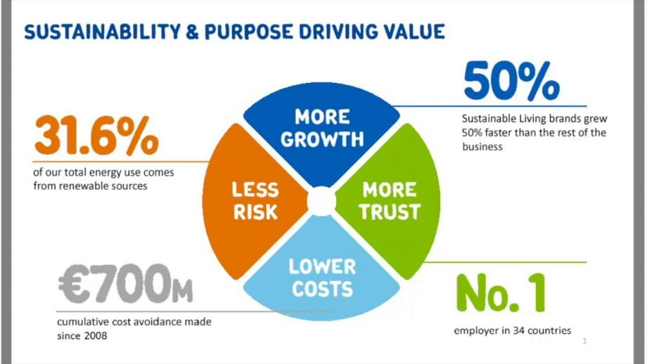
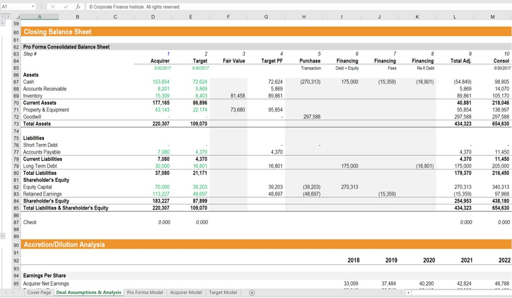
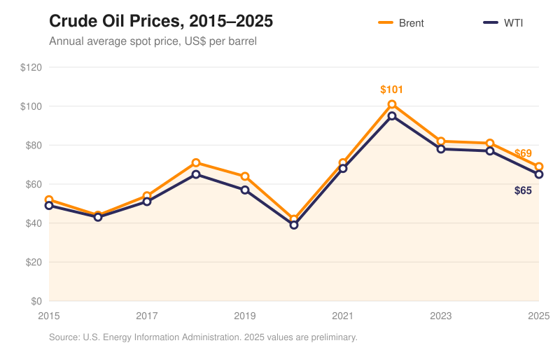
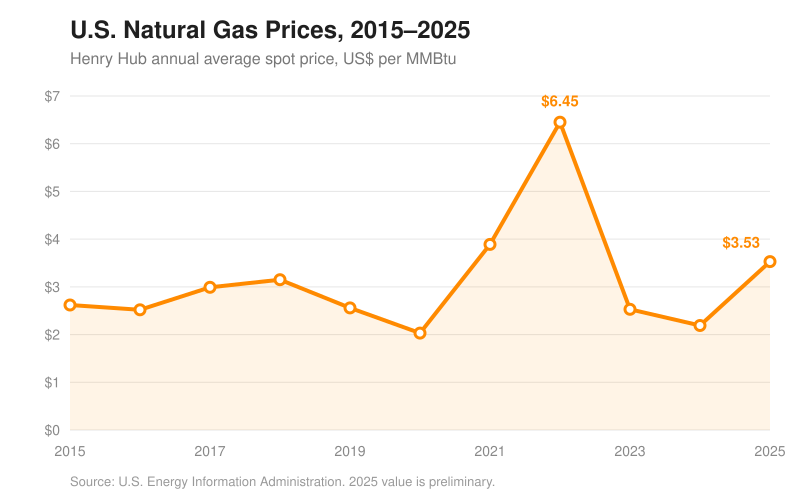

RS Provides:
Our consulting services focus on our clients’ most critical issues and opportunities: strategy, organization, operations, technology, transformation, digital and AI, advanced analytics, corporate finance, mergers & acquisitions, sustainability and the energy transition.
RS is relied on throughout the energy and environmental industries for accurate and insightful short and long-term market, financial, and price forecasts.
Our teams combine hands-on industry experience with proprietary models and data, so every recommendation is grounded in market fundamentals and built to be implemented.
Artificial intelligence, machine learning and advanced analytics promise profound competitive advantages, yet few companies master the combination of people, tools, data and strategic focus needed to capture them at scale. RS’s strategy experience and analytical expertise help you build the capabilities you need – not just to mine data, but to turn it into gold.
RS Advanced Analytics helps you develop strategies that turn your data assets into a true competitive advantage. Our Advanced Analytics practice is supported by our research team, a highly skilled team with advanced degrees in fields from mathematics to computer science, who apply state-of-the-art techniques – from machine learning and optimization to generative AI – to ensure that you derive powerful insights from your data.
Develop advanced analytics strategies that turn your data assets and analytic capabilities into a true competitive advantage.
Deploy advanced analytics for decision support to improve your operational effectiveness and efficiency, and test the results of your customer-facing digital initiatives to ensure maximum impact.
Put AI to work responsibly, from predictive maintenance and production optimization to trading analytics and AI assistants for engineers and analysts, with the data governance and controls to scale safely.
Build an advanced analytics organization, embedding the capabilities you need to execute your data and AI strategies consistently while also addressing the change management issues that naturally arise.

The normal rules of business don’t stop when it comes to sustainability and corporate responsibility. As the energy transition accelerates and climate disclosure becomes standard, RS helps both private and public-sector companies embed those principles in the core of their strategy, operations and culture to make sustainability a source of ongoing and increasing value.
Sustainability efforts should be anchored in business fundamentals, demonstrate a clear return on investment, and be firmly embedded within your strategy and operations. We can help you address critical issues related to sustainability strategy, the environmental and social impacts of operations, stakeholder engagement, and sustainability-related growth and cost opportunities. Our team specializes in helping you:
Develop a sustainability strategy that addresses social, environmental and economic issues while focusing on the areas that are integral to your core business strategy and will achieve a positive material impact.
Seize opportunities to make operations more sustainable, particularly for companies in resource-intensive industries. Reduce methane and flaring, electrify operations, evaluate carbon capture and low-carbon hydrogen, optimize the use of natural resources and make supply chains more efficient.
Prepare for climate and sustainability reporting under evolving standards such as the ISSB, the EU’s CSRD and state-level requirements in the U.S., with emissions data that is decision-useful and audit-ready.
Pursue investment options that account for environmental, social and governance criteria. We help investors of all types, including private equity firms, sovereign wealth funds, investment funds and family offices, factor sustainability issues into their decisions.
Organize for success in sustainability by addressing change management challenges and other potential barriers to results. Many companies fall short of their sustainability targets. We can help you deliver on yours by working with you on operating models and governance, impact metrics and incentives, leadership alignment and support, and creating a strong case for change.

The energy sector is in the midst of a historic wave of consolidation, from Permian Basin mega-mergers to portfolio reshaping by integrated majors and utilities. Use M&A as an integral part of your global growth strategy, plan for opportunities long before they arrive, and build a repeatable acquisition model honed through frequent, continuous deal making. We can help you every step of the way to:
Improve your odds of success by honing your M&A strategy and objectives, developing your M&A team and capability, and building a repeatable process.
Take due diligence to the next level with a fact-based, rigorously quantified assessment that helps you ward off deal fever, spot synergies the market didn’t see and prepare for integration long before the deal is inked.
Capture maximum value from the deal with a battle-tested approach to integration that mitigates the many risks that can undercut a deal’s anticipated synergies.
Attain the highest possible return from divestitures by preparing the asset for sale, running a low-risk carve-out program and shaping the remaining business to thrive post-transaction. If you are considering a spin-off, we can help you develop the thesis, ensure robust spin-off and transaction planning, and set up both companies for success. RS can also help you build the internal capabilities you need to maximize the value of joint ventures and alliances.



Working Together
We work with you to come up with the very best solutions for your challenges!
Power and Utilities
U.S. electric power markets are extremely regional entities that have their own unique set of characteristics. Each electric power market has become increasingly complex as power generation owners are subject to a dynamic regulatory landscape, volatile commodity prices, and uncertain load demand. After two decades of flat demand, U.S. electricity consumption is growing again, driven by data centers and AI, manufacturing and electrification, while grids absorb record additions of solar, wind and battery storage. RS’s power practice focuses on identifying these unique regional characteristics at a very granular level and then compiles them into a structured and systematic assessment of each region.
Crude Oil & Petroleum Products
The oil market has moved from the price collapse of 2020 to the supply shock of 2022 and back to a market shaped by OPEC+ supply management, record U.S. output of more than 13 million barrels per day and slowing demand growth in major economies. Sanctions, shifting trade flows and the long-term outlook for transport fuels add further uncertainty. RS helps producers, refiners, traders and investors understand these forces and position their portfolios for a range of price outcomes.
Natural Gas
The U.S. natural gas market has been utterly transformed by the development of shale resources. Gas is now the largest source of U.S. power generation, and demand is entering a new growth phase as LNG exports expand, pipeline exports to Mexico rise and data centers add new load. With production and demand both growing, prices have become more volatile, as the swings of recent years have shown.
RS’s natural gas team has proven itself, time and again, as one of the leading consulting groups in the industry. RS is equipped and eager to help you solve any financial, regulatory or market issues that concern your business.
Liquefied Natural Gas (LNG)
Once destined to become a major LNG importer, the U.S. has become the world’s largest LNG exporter. Roughly 15 Bcf/d of export capacity is now in service, and a second wave of projects under construction is expected to nearly double that by the end of the decade, fundamentally altering global LNG trade dynamics. The corresponding impact of LNG exports on the U.S. domestic gas market will be no less significant.
RS believes that to understand the future of North American gas markets, one must understand North American LNG. Yet in order to do so, it is necessary to keep tabs on global dynamics, as well. RS’s LNG Outlook is designed for that exact purpose, providing a deep but concise dive into the global LNG industry.